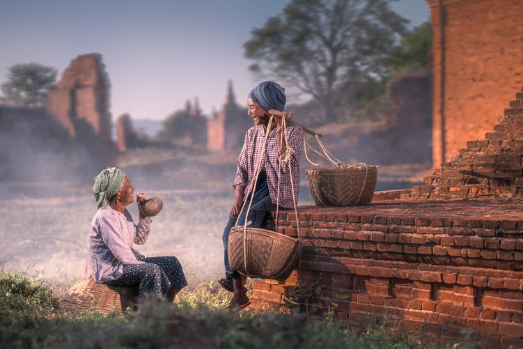
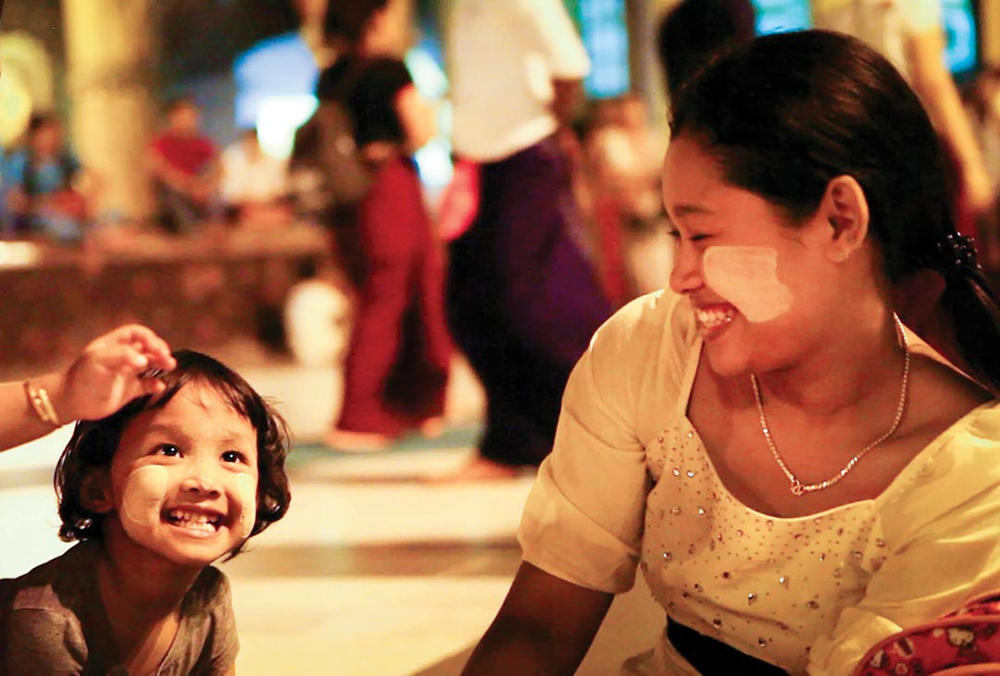

The Traditional Roles of Men and Women
Traditionally in Myanmar culture, women demand a high level of respect.
Read More
Religion in Myanmar
As much as 90% of the Burmese population practice Buddhism, making it the main religion in Myanmar.
Read More

Traditional Festivals in Myanmar
One of the largest festivals that present Burmese customs at their very best is Thingyan. This is the New Year that’s celebrated in April and is characterised by the entire country taking part in a huge water fight.
Read More